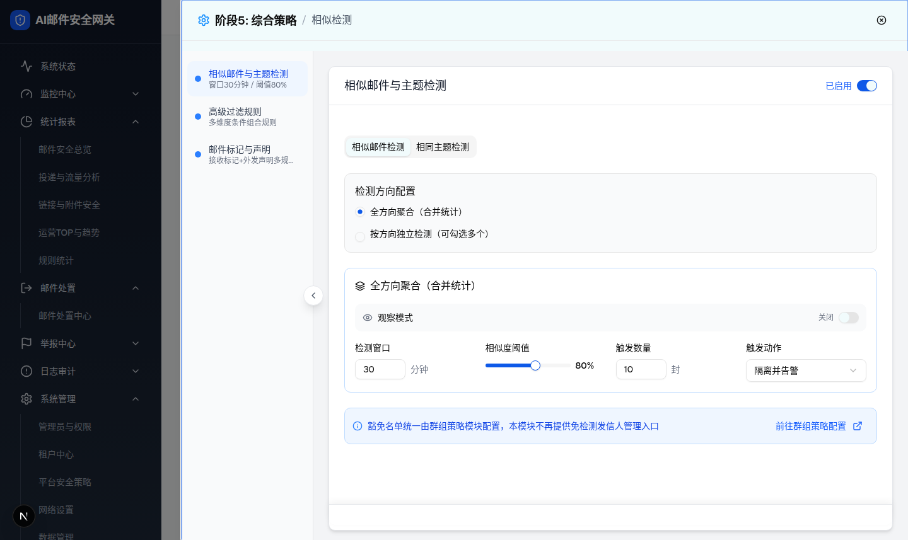

| 所属组件 | 2.3 相似检测模块 SimilarDetectionModule |
| 主文件 | index.html |
| 触发路径 | 层级0/层级1 → “检测方向配置”RadioGroup 选中“全方向聚合（合并统计）” → directionMode=aggregate → 方向复选框行与三张方向卡隐藏，渲染统一配置卡（renderAggregateConfig()） |
| demo 组件 | similar-detection-module.tsx renderAggregateConfig() |
| 与 split 模式差异 | ① 单卡横向 4 列栅格（md:grid-cols-2 lg:grid-cols-4）而非纵向字段列表；② 头部 Layers 图标、无“同步到其他方向”按钮；③ 观察开关开启后无“查看观察日志”链接（split 卡有）；④ aggregateConfig 两个 Tab 共享同一份；⑤ PRD 称聚合是“默认兼容模式”，demo 默认却是 split（差异 D-7）。 |

| 序号 | 元素 | 实际文案/默认值 | 校验 | 交互行为 | i18n key（模块内 L.*） |
|---|---|---|---|---|---|
| 1 | RadioGroup | “全方向聚合（合并统计）”选中 | 单选 | 选中即隐藏方向复选框行与三卡片；切回 split 恢复（TC-010 验证通过） | L.aggregateMode / L.splitMode |
| 2 | 卡片头部 | Layers 图标 + “全方向聚合（合并统计）”；观察开启时追加琥珀 Badge | — | 无同步按钮（仅 split 卡有） | L.aggregateMode / L.observeMode |
| 3 | 观察模式开关行 | Eye 图标 + “观察模式” + 状态字 + Switch（默认关） | — | 开启：卡片变琥珀、Badge 出现、触发动作 disabled、全局警告条出现（徽章文案=“全方向聚合（合并统计）”）；不出现“查看观察日志”链接 | L.observeMode / L.observeModeOn / L.observeModeOff |
| 4 | 检测窗口 / 触发数量 | 30 分钟 / 10 封（number input） | 无前端校验（差异 D-3） | onChange 直接写入 aggregateConfig | L.detectionWindow / L.triggerCount |
| 5 | 相似度阈值 | Slider 50-100 步进5，默认 80% | 范围由组件限定 | 仅相似邮件检测 Tab 渲染（相同主题 Tab 的聚合卡为 3 字段） | L.similarityThreshold |
| 6 | 触发动作 | Select 全宽，默认“隔离并告警”，6 选项 | 观察开启时 disabled | 同层级0 | L.triggerAction 等 |
| 比对项 | demo 实际 DOM | 提取/预览 HTML | 是否一致 |
|---|---|---|---|
| Radio 状态 | aggregate=checked，split=unchecked | aggregate checked | 一致 |
| 方向复选框行 | 不渲染（checkboxes 采集为空数组） | 预览不渲染复选框行 | 一致 |
| 三张方向卡 | 不渲染，仅“检测方向配置”块（节点数13）+ 聚合卡 | 预览同构 | 一致 |
| 聚合卡 | 蓝边、switch unchecked、inputs [30,10]、slider aria-valuenow=80、combobox “隔离并告警”可用、无同步按钮、节点数 44 | 预览同状态 | 一致 |
| 全局警告条 | 不渲染（观察关） | 预览隐藏，开启开关后出现且徽章为“全方向聚合（合并统计）” | 一致 |